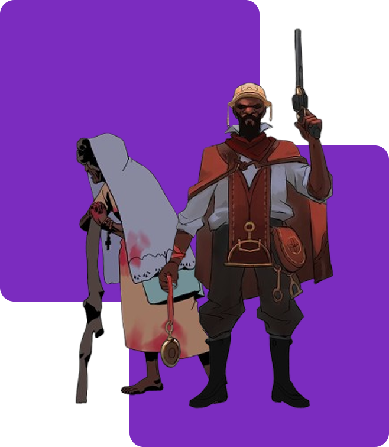

Em Hell Clock, você assume o papel de Pajeú, um ex-escravo e guerreiro destemido, determinado a resgatar seu mentor, Antônio Conselheiro, das forças sobrenaturais que assolam a região. Este jogo oferece uma experiência única ao combinar elementos de ARPG com mecânicas de roguelite, proporcionando combates intensos e desafiadores. Com uma narrativa profunda ambientada em uma versão sombria da Guerra de Canudos, os jogadores enfrentarão demônios e criaturas místicas enquanto exploram masmorras traiçoeiras. A dublagem em português e a riqueza de detalhes culturais tornam Hell Clock uma jornada imperdível para os fãs de ação e história.
